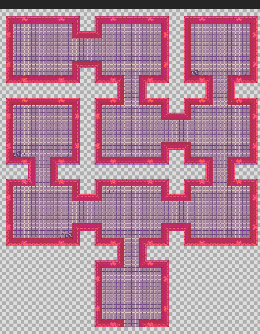
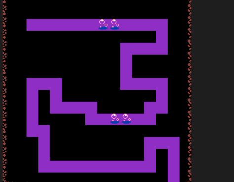

| Lehenengo mapa |  |
Hau pertida hasterakoan eramaten digun tokia da, hemendik printzesa joan behar dutxanponal bilatzen. Puntu urdinen funtzioa kodeetan esplikatuta dago, printzesa karratuaukitzerakoan beste mapara pasatuko da. |
| Bigarren mapa |  |
Mapa hau simpleagoa da mapa honetaran hailegatzerakoan printzasaren aurka etsai geihago egongo direlako. |